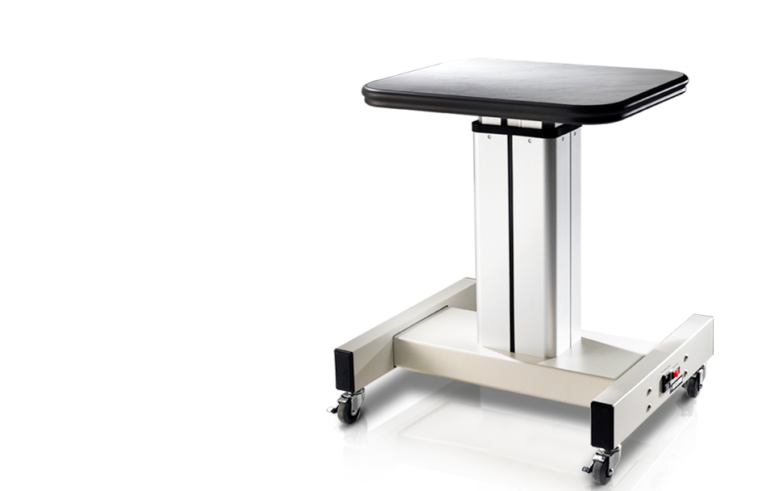

CIT-4000
Object Lens 교환 및 액세서리 장착까지 용이하여 고도의 효율성을 요구하는
환경에서 시각적 효과를 극대화할뿐 아니라 활용도가 더욱 높아집니다.
최적화된 줌 및 색상 재현 기능으로 안정적이고 높은 품질의 이미지를 제공합니다.
- 
제품사양
| DIMENSIONS | 500(W) x 465(D) x 850(H)mm |
|---|---|
| Weight | 26kg(including Table Top for Auto Refracmetor) 29kg(including Table Top for Slit Lamp HS-5000) |
| Power Supply | AC 220 ~ 230V, 50/60Hz |
| Travel Length | 250mm |
| Speed | 22mm/sec(under 40kg), 11mm/sec(under 60kg) |
| Load | Max 60kg |
| Others | Up, down movement operation pedal included |